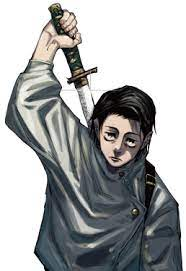
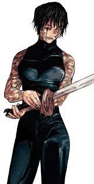
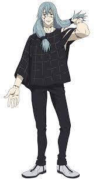
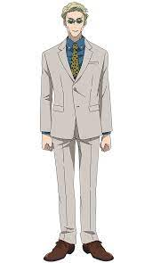

- Gojo satoru
- Yuta okkotsu
- Yuji itadori
- Megumi fushiguro
- Nobara kugisaki
- Geto suguru
- Yuki tsukomo
- Maki zenin
- Toji zenin
- Mahito
- Hanami
- Jogo
- Ryomen sukuna
- Nanami kento
Gojo satoru

Satoru Gojo is one of the most powerful and charismatic jujutsu sorcerers in "Jujutsu Kaisen,"
known for his immense strength, unparalleled combat skills, and the ability to manipulate space with his Limitless Cursed Technique.
As a mentor at Tokyo Metropolitan Magic Technical College, he plays a crucial role in training new sorcerers,
including the protagonist Yuji Itadori.
Yuta okkotsu
Yuta Okkotsu is a central character in "Jujutsu Kaisen," initially introduced in the prequel series "Jujutsu Kaisen 0."
He is a powerful jujutsu sorcerer cursed with the vengeful spirit of his childhood friend, Rika Orimoto, granting him immense strength.
Yuta's journey focuses on learning to control his powers and finding a way to free Rika's spirit, under the guidance of his mentor, Satoru Gojo.
Yuji itadori
Yuji Itadori is the main protagonist of "Jujutsu Kaisen," a high school student with extraordinary physical abilities.
After consuming a cursed object—the finger of the powerful Curse, Ryomen Sukuna—he gains the ability to control Sukuna's immense power but also becomes his vessel.
To combat malevolent curses, Yuji joins the Tokyo Metropolitan Magic Technical College, where he trains as a jujutsu sorcerer under the mentorship of Satoru Gojo.
Megumi fushiguro
Megumi Fushiguro is a jujutsu sorcerer and a first-year student at Tokyo Metropolitan Magic Technical College.
He possesses the powerful Ten Shadows Technique, which allows him to summon and control shikigami.
As a calm and composed individual, he plays a crucial role in battling curses alongside his classmates Yuji Itadori and Nobara Kugisaki.
Nobara kugisaki
Nobara Kugisaki is a first-year student and a jujutsu sorcerer at Tokyo Metropolitan Magic Technical College.
She wields a unique combat style using a hammer and nails infused with cursed energy.
Known for her fiery personality and unwavering determination, Nobara is a key member of the team fighting against curses.
Geto suguru
Geto Suguru is a former jujutsu sorcerer and a central antagonist in "Jujutsu Kaisen."
Once a classmate and friend of Satoru Gojo, he became disillusioned with humanity and turned to the path of darkness.
Geto aims to create a world free of non-sorcerers by orchestrating large-scale curse attacks.
Yuki tsukomo

Yuki Tsukomo is a special grade jujutsu sorcerer known for her rebellious and unconventional methods.
She often operates independently from the main jujutsu organizations.
Yuki is dedicated to finding a fundamental solution to the curse problem, beyond merely exorcising them.
Maki zenin
Maki Zenin is a second-year student at Tokyo Metropolitan Magic Technical College and a member of the prestigious Zenin clan.
Despite lacking cursed energy, she excels in combat through her exceptional physical abilities and mastery of cursed tools.
Maki strives to prove her worth and break free from her clan's oppressive traditions.
Toji zenin
Toji Zenin, also known as Toji Fushiguro, is a former member of the Zenin clan and a powerful non-sorcerer assassin.
Known for his immense physical strength and skill in using cursed tools, he is feared even among jujutsu sorcerers.
Toji is the father of Megumi Fushiguro and plays a significant role in the series' backstory.
Mahito
Mahito is a malevolent and sadistic curse who delights in manipulating and distorting human souls.
As a primary antagonist, he possesses the ability to reshape bodies with his Idle Transfiguration technique.
Mahito's encounters with Yuji Itadori and his friends are pivotal in the series' conflict.
Hanami
Hanami is a powerful curse aligned with Mahito and the other antagonists seeking to eradicate humanity.
Resembling a nature spirit, Hanami can control plants and uses them to devastating effect in battle.
Hanami's goal is to protect nature from human destruction, even if it means wiping out humanity.
Jogo
Jogo is a high-ranking curse with a volcanic appearance and the ability to manipulate fire and lava.
He is fiercely loyal to the cause of curses overthrowing humanity.
Jogo's encounters with Satoru Gojo and other sorcerers showcase the intense battles in the series.
Ryomen Sukuna
Ryomen Sukuna, known as the King of Curses, is an ancient and immensely powerful curse.
After being resurrected within Yuji Itadori's body, he poses a constant threat due to his immense strength and cunning.
Sukuna's malevolent presence significantly impacts the dynamics of the series.
Nanami kento
Nanami Kento is a stoic and highly skilled jujutsu sorcerer who once left the profession for a regular job.
He returned to the sorcerer world to combat curses and now serves as a mentor to Yuji Itadori.
Known for his pragmatic approach and strong sense of duty, Nanami is a reliable and respected figure among the sorcerers.